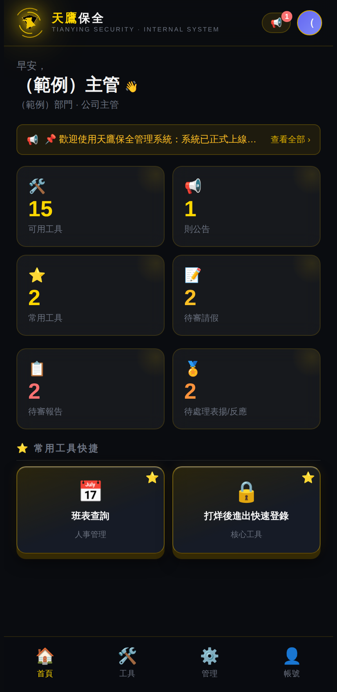
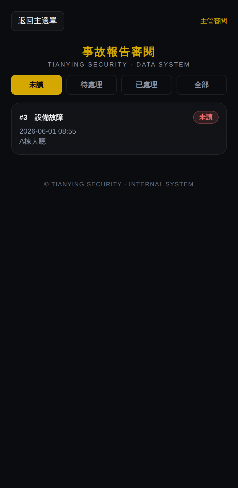
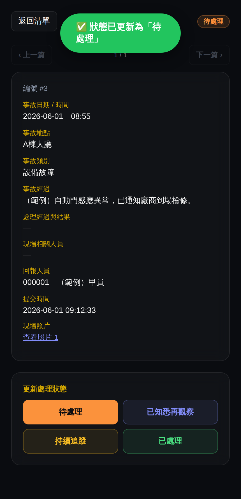
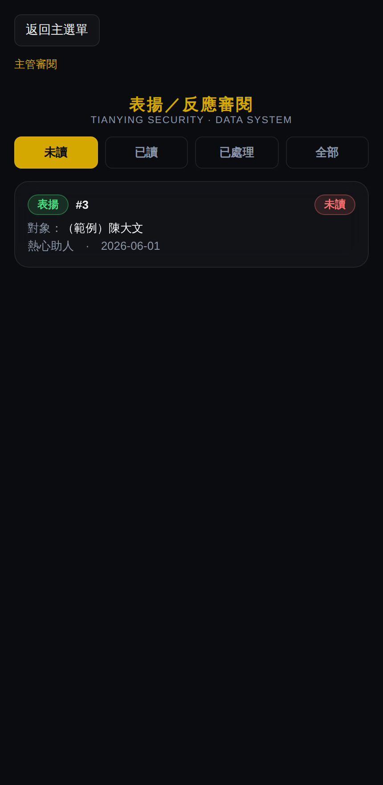
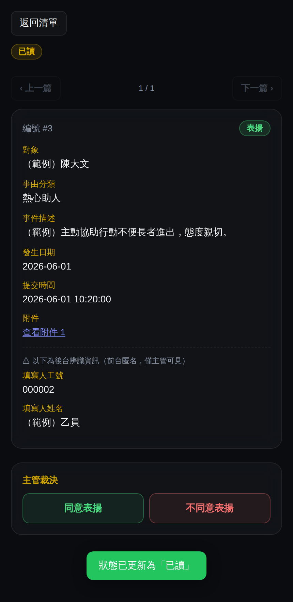

👔
天鷹保全
TIANYING SECURITY · DATA SYSTEM
APP 操作使用手冊
主管版
適用對象：公司主管 / 管理員（含各級管理職）
版本 v1.0 · 2026 年 6 月
本手冊涵蓋主管專屬功能；一般操作請參閱員工版
0目錄
- 主管角色與權限
- 首頁主管專屬卡片
- 事故報告審閱
- 匿名表揚／反應審閱
- 請假審核
- 狀態定義總表
- 常見問題 FAQ
👔 主管版＝員工版所有功能 ＋ 本手冊的審閱／審核功能。基本登入與工具操作請見《員工版手冊》。
＊本手冊所有畫面均為示範資料（範例），非真實人員／紀錄。
1主管角色與權限
| 角色 | 能看到的審核功能 |
|---|
| 管理職（組長/副隊長/隊長） | 首頁待審請假卡片、請假審核 |
| 公司主管 executive | 以上 ＋ 待審報告、待處理表揚反應、兩個審閱畫面 |
| 管理員 admin | 以上全部 ＋ 待審帳號審核 |
「待審報告」「待處理表揚／反應」兩格卡片與兩個審閱畫面，僅公司主管與管理員看得到。
2首頁主管專屬卡片
主管登入後，首頁四格卡片下方會多出兩格（紅／橙數字代表待處理量）：
| 卡片 | 數字意義 | 點擊後 |
|---|
| 📋 待審報告 | 事故報告中，狀態 ≠ 已處理 的筆數 | 開啟「事故報告審閱」畫面 |
| 🏅 待處理表揚／反應 | 表揚反應中，狀態 ≠ 已處理 的筆數 | 開啟「表揚／反應審閱」畫面 |
原有的卡片：待審請假（黃色數字＝待審件數）、待審帳號（管理員限定）。

▲ 主管首頁，下方多出「待審報告」「待處理表揚／反應」兩格
3事故報告審閱
進入方式
首頁點「📋 待審報告」卡片，或工具開啟（網址加 ?mode=admin）。
清單頁
- 頂部四個分頁：未讀 待處理 已處理 全部
- 「待處理」分頁包含所有處理中狀態（待處理／已知悉再觀察／持續追蹤）。
- 每張卡片顯示編號、類別、日期時間、地點與狀態徽章。點卡片進入詳情。
詳情頁
- 顯示完整欄位、回報人員、現場照片連結（點開可看）。
- 頂部 ‹ 上一篇 / 下一篇 ›：依進入當下的分頁順序翻閱（例如在「未讀」分頁進入，就沿未讀清單前後翻，不受自動轉狀態影響）。
- 打開未讀資料會自動轉為「待處理」（代表已被主管看過）。
更新處理狀態
詳情頁底部四顆按鈕，依實際處置點選：
| 狀態 | 意義 |
|---|
| 待處理 | 已看過、尚待處理 |
| 已知悉再觀察 | 知悉，暫不處理、持續觀察 |
| 持續追蹤 | 需後續追蹤 |
| 已處理 | 結案，從待審計數移除 |
按下後出現綠色「✅ 已更新」即成功，試算表同步更新；數字會即時反映在首頁卡片（重新整理）。

▲ 清單頁（分頁＋狀態徽章）

▲ 詳情頁（上下篇＋狀態鈕）
4匿名表揚／反應審閱
進入方式
首頁點「🏅 待處理表揚／反應」卡片進入。
清單頁
- 分頁：未讀 已讀 已處理 全部
- 類型徽章：表揚（綠） / 反應（橙）。
詳情頁
- 打開未讀資料會自動轉為「已讀」。
- 底部會顯示後台辨識資訊（填寫人工號／姓名） —— 此區僅主管可見，前台對員工匿名。
- 同樣支援上一篇／下一篇。
主管裁決
詳情頁底部依類型出現兩顆裁決鈕，按下後狀態轉「已處理」並記錄「處置」：
| 類型 | 裁決按鈕 |
|---|
| 表揚 | 同意表揚 / 不同意表揚 |
| 反應 | 同意懲處 / 不同意懲處 |
裁決後該筆移到「已處理」分頁，並在試算表「處置」欄留下你的決定。

▲ 清單頁（表揚／反應徽章）

▲ 詳情頁（後台辨識＋裁決鈕）
5請假審核
- 首頁「待審請假」卡片顯示待審件數，點擊進入清單。
- 逐筆查看員工請假（日期、原因），按核准或駁回。
- 員工透過 APP 或 LINE 送出的請假都會匯入此處；審核結果會透過 LINE 通知員工。
6狀態定義總表
| 畫面 | 狀態流程 | 待審卡片計算 |
|---|
| 事故報告 | 未讀 →（打開）待處理 → 已知悉再觀察／持續追蹤 → 已處理 | 狀態 ≠ 已處理 |
| 表揚／反應 | 未讀 →（打開）已讀 →（裁決）已處理 | 狀態 ≠ 已處理 |
| 請假 | 待審 → 核准／駁回 | 待審件數 |
7常見問題 FAQ
| 問題 | 解決方式 |
|---|
| 按狀態鈕說「更新失敗」但資料有變 | 已修正。請確認 APP 已更新到最新版。 |
| 看不到審閱卡片 | 需公司主管／管理員角色，請確認帳號職務。 |
| 照片連結點開要權限 | 照片存於公司雲端資料夾，主管帳號需有該資料夾存取權。 |
| 翻頁順序怪怪的 | 正常：上一篇／下一篇依「進入詳情時的分頁順序」固定，不會因自動轉狀態而跳動。 |